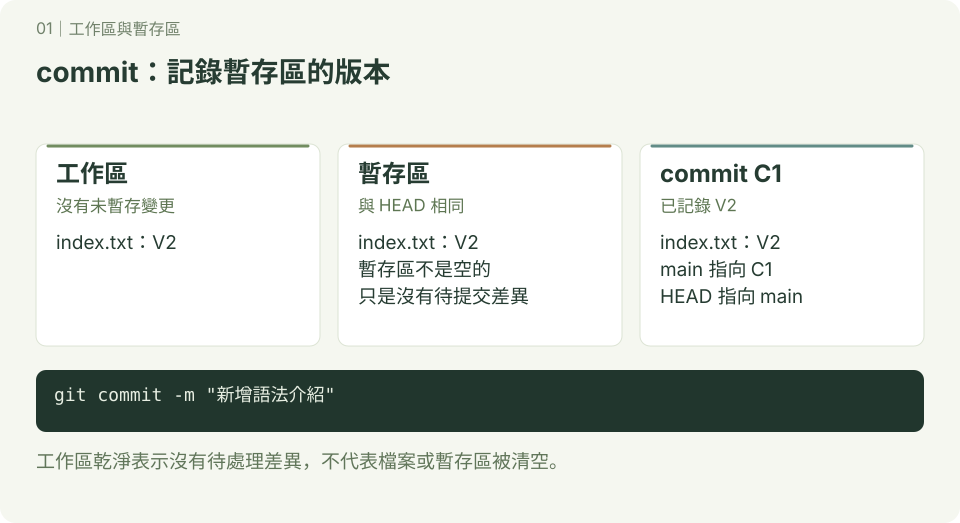
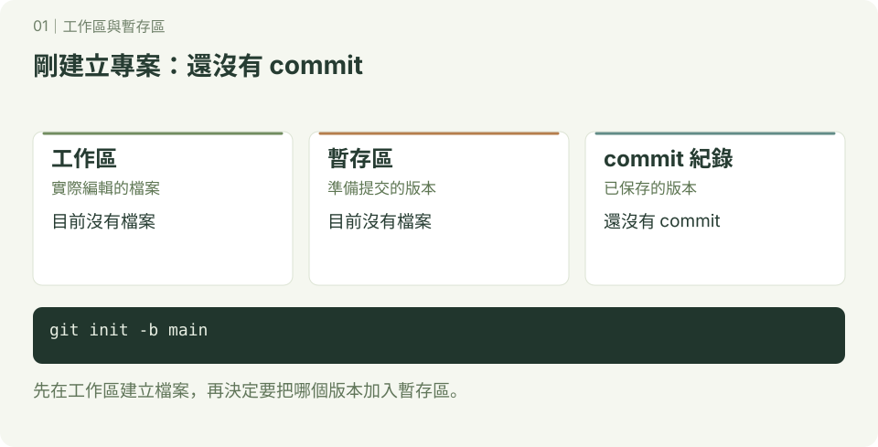
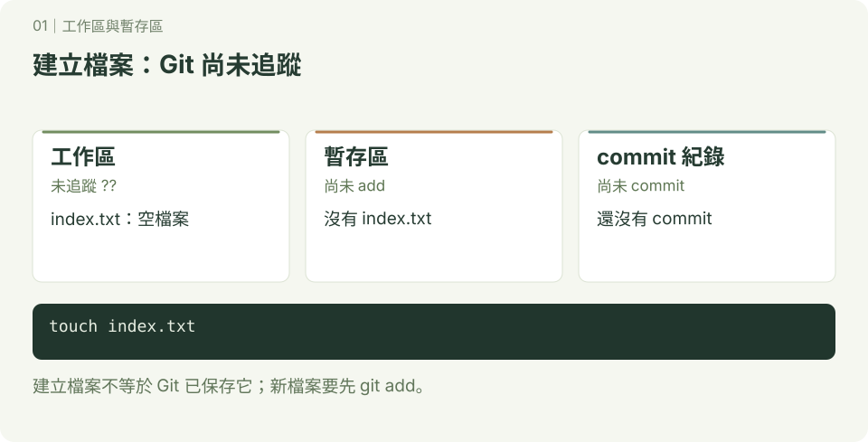
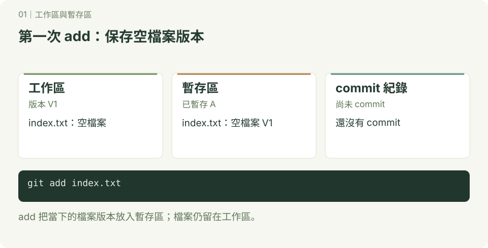
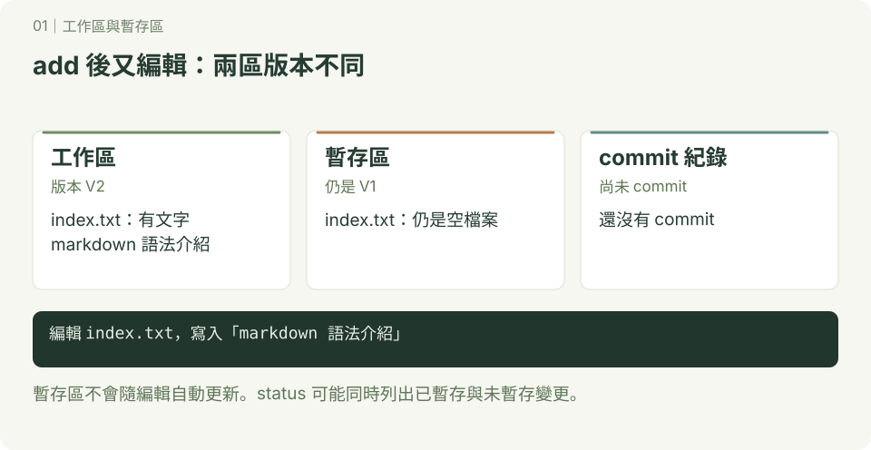
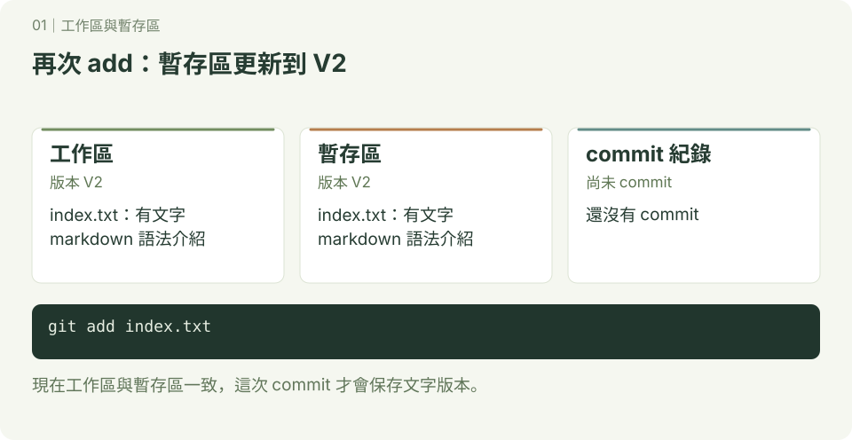
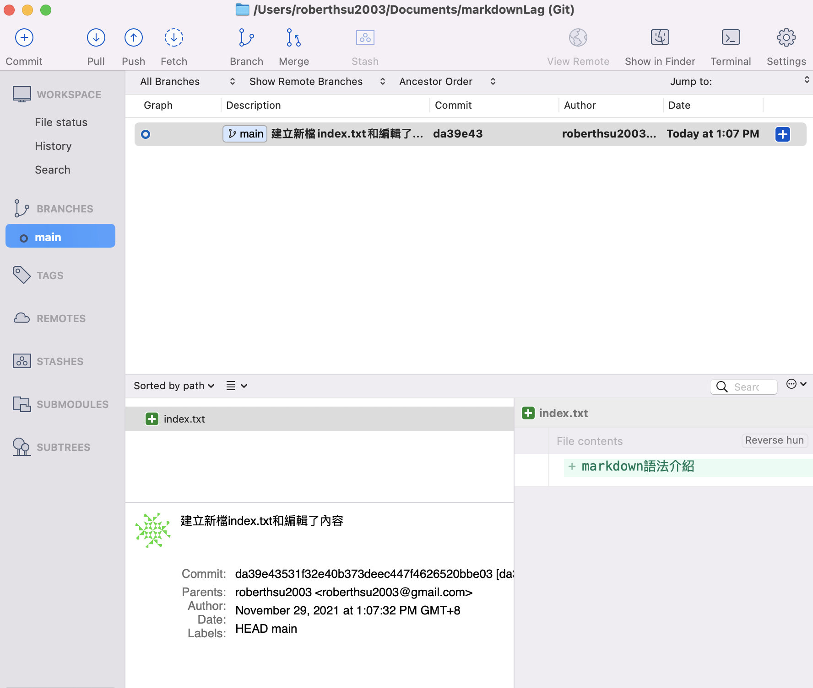

工作區與暫存區
圖解已重畫為 SVG；圖中使用 main 與簡化 commit 名稱，舊範例若使用 master，主要分支的概念相同。互動版見 Git 圖解教室。
git是什麼?

就是在專案開始到結束時, 建立非常多的記錄點(commit),在開發的過程中,我們可以在記錄點上遊走,說簡單點就是我們可以回到記錄點被建立當下的專案檔案的狀態。
建立記錄點有什麼好處呢?
1. 當專案測試新功能時，發現程式不對，可以回到測試前的記錄點，重新開始
2. 不怕專案不小心被刪了
3. 可以多人同時開發相同專案
4. 可以記錄每一個檔案是誰修改的，時間點，改了那些東西，簡單的註記說明
5. 可以保存在git server(github)
使用 「GUI介面」 還是「Command line」介面較好?
不會command line介面，基本上就不會使用GUI介面。GUI介面只是一個方便檢視(view)功能，不建議使用GUI操作功能
Git好學嗎?
好學，難熟練。學20%功能，就可以使用80%功能。所以初學者一開始不要鑽牛角尖。
開始將專案交給git管理
- 建立一個資料夾，這資料夾將是我們的專案
- 將資料夾交給git管理
操作與輸出
$ cd ~/Documents #進入文件資料夾
$ mkdir markdownLag #建立markdownLag
$ cd markdownLag #進入markdownLag資料夾
$ git init #初始化git, 將資料夾交給git管理檢查markdownLag資料夾內的檔案內容:
操作與輸出
$ ls -al
---------------
drwxr-xr-x 3 roberthsu2003 staff 96 11 29 11:26 .
drwx------+ 19 roberthsu2003 staff 608 11 29 11:25 ..
drwxr-xr-x 9 roberthsu2003 staff 288 11 29 11:26 .git以上資料夾建立了一個隱藏檔「.git 」，未來所有的git資訊將儲存於.git內，也代表此資料夾目前已經被git管理。
下方為您可以想像的圖像:
- 工作區(就是在這資料內的檔案和目錄),目前是空的
- 暫存區(要將檔案加入至記錄區時，必需先加入至暫存區)
- 記錄區(記錄當時工作區的狀態)

取消git的管理(直接刪除.git)
操作與輸出
$ rm -rf .git建立不初git管理的檔案清單(.gitignore)
操作與輸出
$ touch .gitignore.gitignore內容
操作與輸出
.DS_Store
__pycache__
.env
.enve
*.pyc新增1個檔案,並交由git管理
操作與輸出
$ touch index.txt #建立一個index.txt檔操作與輸出
$ git status
-------------
On branch main
No commits yet
Untracked files:
(use "git add <file>..." to include in what will be committed)
index.txt
代表說明index.txt是新建立的檔案尚未被追蹤

操作與輸出
$ git add index.txt #git開始追蹤index.txt檔操作與輸出
$ git status
--------------------
On branch main
No commits yet
Changes to be committed:
(use "git rm --cached <file>..." to unstage)
new file: index.txt
代表index.txt已經被追蹤，等待被加入記錄區

修改index.txt的內容
操作與輸出
$ vim index.txt #:wq存檔並離開
-----------------------------
markdown語法介紹
~
~
~
~
~
~
~
~
~
~
~
檢查目前git狀態
操作與輸出
$ git status
---------------------
Changes to be committed:
(use "git rm --cached <file>..." to unstage)
new file: index.txt
Changes not staged for commit:
(use "git add <file>..." to update what will be committed)
(use "git restore <file>..." to discard changes in working directory)
modified: index.txt
- 暫存區內有記錄新增了一個檔
- 工作區內的index.txt已經被編輯，尚未加入至暫存區內

將編輯的狀態加入暫存區，並檢目前狀態
操作與輸出
$ git add --all #代表將工作區內所有有改變的檔案，加入至暫存區
$ git status
-------------------------
On branch main
No commits yet
Changes to be committed:
(use "git rm --cached <file>..." to unstage)
new file: index.txt
- 暫存區內有記錄index.txt編輯的狀態
- 工作區與暫存區的內容一致，沒有未暫存差異

將目前的暫存區建立記錄點並加入至記錄區內，並檢目前狀態和log
操作與輸出
$ git commit -m "建立新檔index.txt和編輯了內容"
------------
[main (root-commit) da39e43] 建立新檔index.txt和編輯了內容
1 file changed, 1 insertion(+)
create mode 100644 index.txt
$ git status
-------------------
On branch main
nothing to commit, working tree clean
$ git log
--------------------------
commit da39e43531f32e40b373deec447f4626520bbe03 (HEAD -> main)
Author: roberthsu2003 <roberthsu2003@gmail.com>
Date: Mon Nov 29 13:07:32 2021 +0800
建立新檔index.txt和編輯了內容
- 代表建立在記錄區內的第一個記錄點，識別碼前面的7個字元是「da39e43」,記錄點的註解是"建立新檔index.txt和編輯了內容"
- 目前工作區沒有任何改變，暫存區與 HEAD 的內容一致，沒有待提交差異
- 說明如下圖:

在source tree出現的畫面
